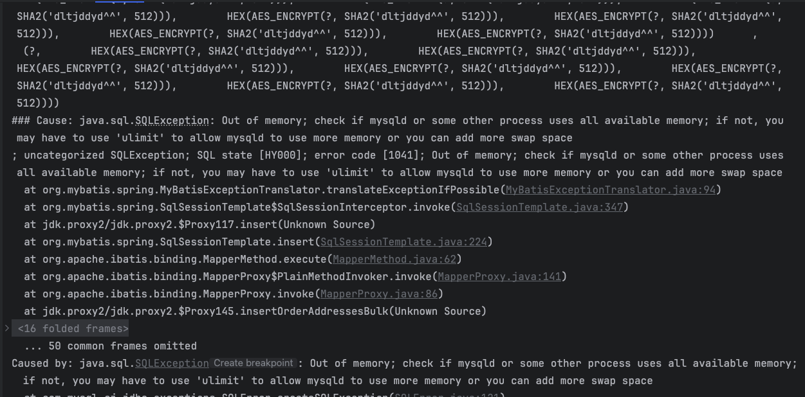
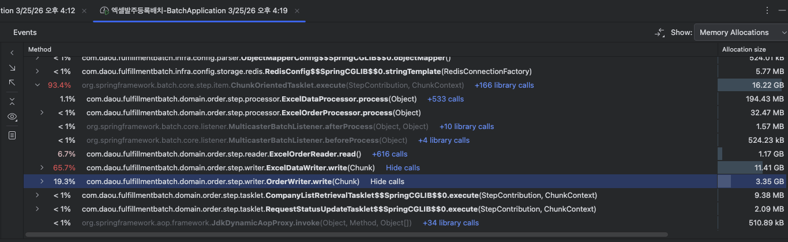
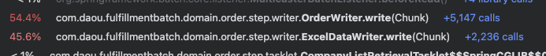
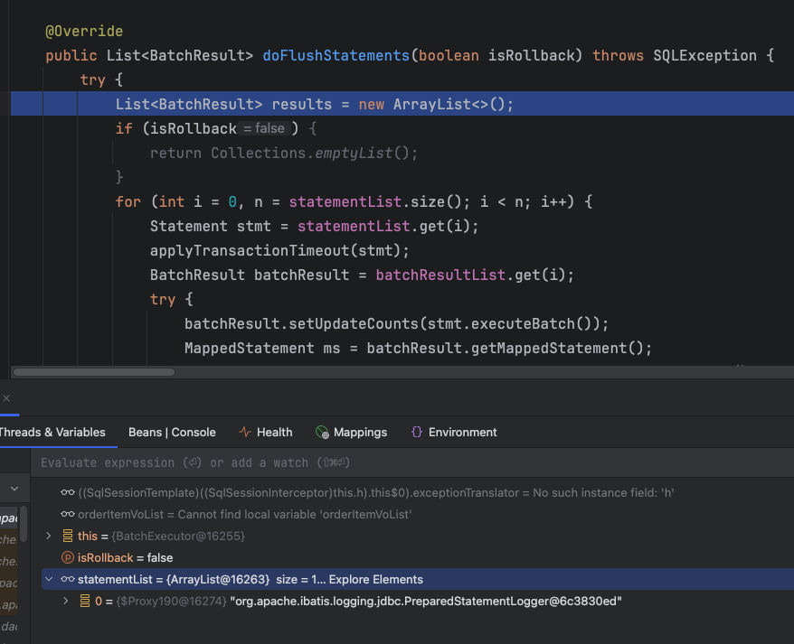
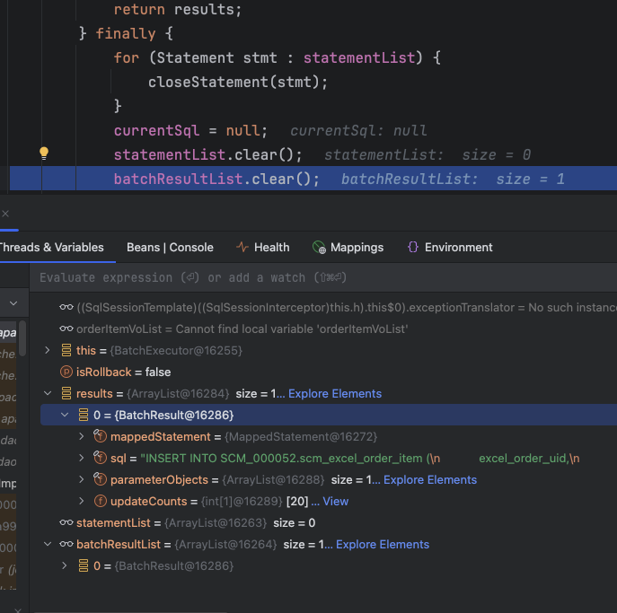
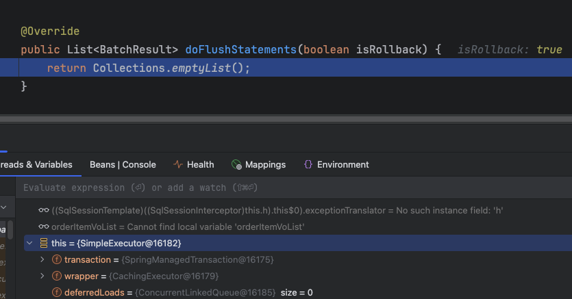
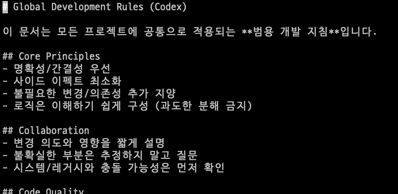
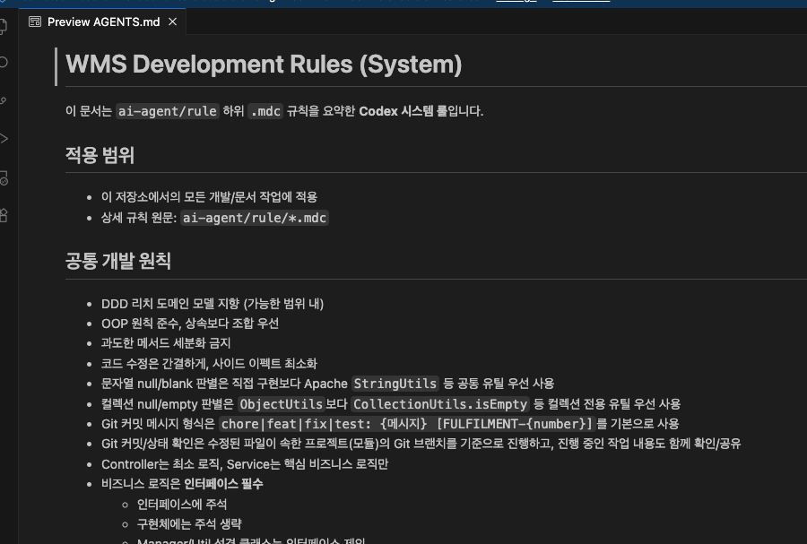
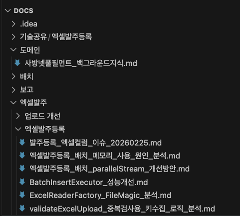
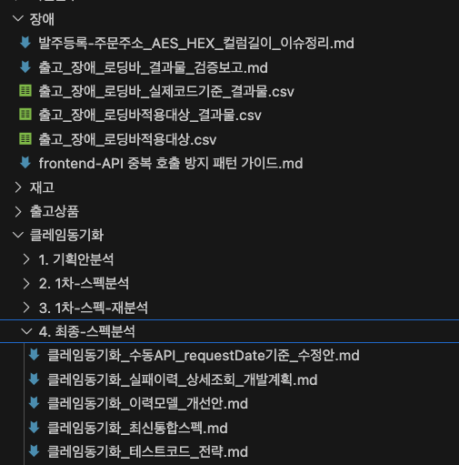

단순 성능개선 결과 공유가 아니라,
문제를 어떻게 정의했고 어떤 근거로 원인을 좁혀갔는지까지 발표 흐름에 맞게 정리합니다.
출발점은 단순한 성능 개선이 아니라, 대용량 엑셀 업로드에서 반복되던 OOM을 구조적으로 줄이는 것이었습니다.

as-is-insert-bulk-oom-exmaple.md 기반 로그 캡처
insertOrderAddressesBulk 실행 중 java.sql.SQLException: Out of memory 가 발생한 로그입니다.

OrderWriter.write 와 ExcelDataWriter.write 가 메모리 대부분을 점유한 상태를 보여줍니다.

OrderWriter.write 와 ExcelDataWriter.write 비중이 줄어들면서, write 구간 메모리 체류가 완화된 모습을 비교할 수 있습니다.
docs/기술공유/엑셀발주등록/세미나자료/AS-IS-OrderService-saveOrdersBulk.java
"엑셀 row 수가 많아서 읽는 과정에서 OOM이 났다"
파일 크기와 row 수 때문에 가장 먼저 떠올리기 쉬운 가설이지만, 실제 프로파일링 결과와는 달랐습니다.
문제는 읽기보다 쓰기 구간의 메모리 피크였습니다.
핵심은 row 수 자체가 아니라, MyBatis 세션이 SQL payload와 중간 상태를 얼마나 오래 붙잡고 있느냐였습니다.
딥다이트_기술공유_진행방향 자료를 추가로 참고하면 됩니다.
docs/기술공유/엑셀발주등록/BatchInsertExecutor.java대량 insert 로직이 서비스마다 중복되기 시작했고, generated key 필요 여부에 따라 executor 전략도 달랐습니다.
그래서 chunk 단위 분할, executor 분기, 세션 생명주기 관리를 한 곳에 모은 공통 유틸로 분리했습니다.
useGeneratedKeys 여부에 따른 분기를 공통화했습니다.SIMPLE 또는 BATCH를 선택BATCH일 때만 batch 버퍼 실행 및 local cache 정리ExecutorType을 런타임에 결정합니다.SqlSession을 새로 열고 닫습니다.BATCH에서만 flushStatements()와 clearCache()를 묶습니다.flushStatements()에서부터 batch가 시작된다"mapper.insert() 호출 시점, 즉 BatchExecutor.doUpdate()에서 이미 시작됩니다.
flush · clearCache · close
statementList와 내부 상태가 실제로 존재하는 것을 확인할 수 있습니다.

statementList.clear() 이후 내부 상태가 정리된 것을 확인할 수 있습니다.

SimpleExecutor.doFlushStatements(...)는 예제와 같이 Collections.emptyList()를 반환합니다.
| 구분 | SIMPLE | BATCH |
|---|---|---|
| SQL 실행 시점 | mapper 호출 즉시 | flushStatements() 시점 |
| 메모리 위험 | 단일 SQL payload 피크 | 누적 buffer 피크 |
| flushStatements() | no-op | 핵심 정리 포인트 |
| useGeneratedKeys | 지원 | 제약 있음 |
| OOM 한계 결정 요인 | 총 row 수 | chunkSize × payload |
BatchInsertExecutor 사례 뒤에는 구현만 남는 것이 아니라, 문서화, 검증, 산출물 공유까지 이어지는 AI 활용 흐름이 있습니다.
/docs 하위에 정리 후 PRD 작성
설계, 검증 포인트, 테스트케이스 정리
반복 작업 가속
문제 발견 시 직접 수정 또는 재요청
테스트케이스 컴파일 및 통과 확인


md 파일 형태로 정리해 Jira 이슈별로 업로드하여 관리할 예정입니다.

https://pact-beam.lovable.app/